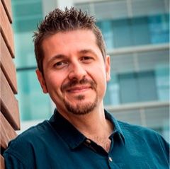

Descarga tu constancia
¡Gracias por acompañarnos! Ten a la mano el folio de tu pase de registro.
Descargar mi constanciaConferencia Magistral

Especialista en Medicina Intensiva, es el creador y fundador del Proyecto HU-CI, una iniciativa internacional de investigación para la humanización de la asistencia sanitaria, que busca un cambio de modelo organizativo que conserve la dignidad de las personas: pacientes, usuarios, familiares y profesionales de la salud.
Dirige actualmente el Máster de Humanización de la Universidad de Barcelona y es director del Comité de Humanización de la Federación Panamericana e Ibérica de la Medicina Crítica y Terapia Intensiva.
Se ha iniciado también en la carrera literaria con el libro En primera línea, un emocionante relato sobre la lucha de un médico durante la pandemia: una bella historia de esfuerzo y superación.
Es actualmente jefe de Servicio de la Unidad de Gestión Clínica de Medicina Intensiva del Hospital Comarcal Santa Ana de Motril, en Granada.
Programa
¿Aún no te has registrado? El registro es obligatorio y el cupo es limitado.
Registrarme